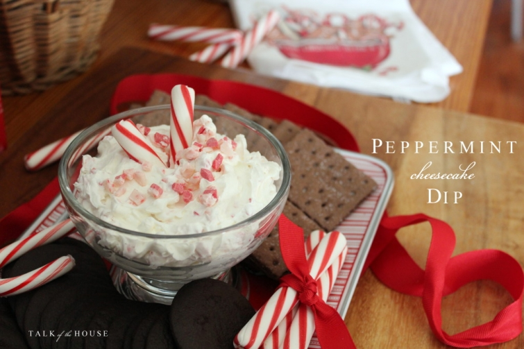
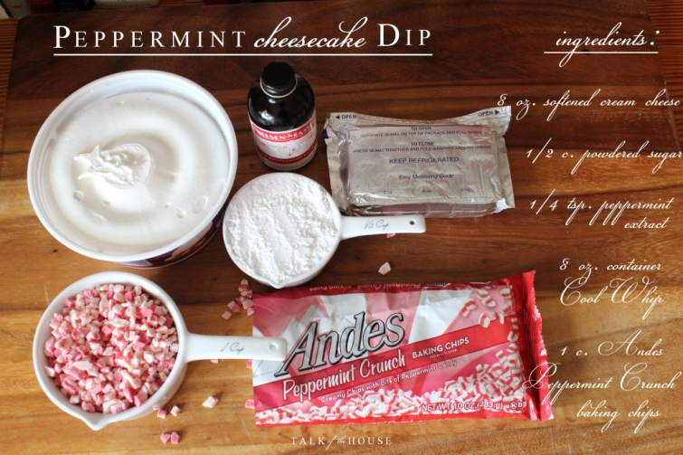
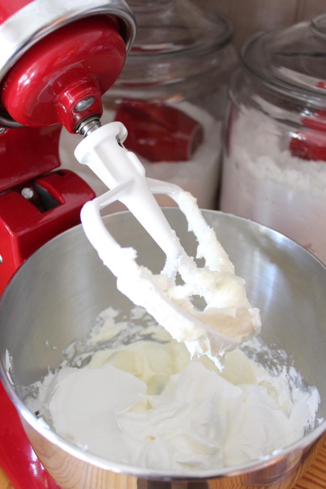

.png)
.PNG)
.PNG)
.PNG)
.PNG)
.PNG)
.JPG)
.JPG)
.PNG)
.PNG)


If you are not already familiar with Peppermint Cheesecake dip, let me just tell you….you need this recipe. It is perfect for any get-together at this time of year…big party, little party, or just sharing it with co-workers for a mid-morning treat. (They will love you for it. 🙂 ) I say it is perfect because not only does it taste great, but it is also super easy to prepare – fast with no cooking involved. (Hooray!) I found the recipe on Foodfolksandfun.net, but I am changing what she serves it with.
Here are all the ingredients you will need. Our Kroger grocery store did not have the Andes baking chips, but I found them at Walmart. I’ve read you can substitute real whipped cream for the Cool Whip, but I don’t know if the texture would hold up with it..so I am sticking with the Cool Whip in mine.
Step 1 – Beat the softened cream cheese until smooth.
Step 2 – Mix in the powdered sugar and peppermint extract, and beat all of that until well combined.
Step 3 – Add the Cool Whip, and beat again for 1 minute.
Step 4 – Fold in 1 cup of Andes Peppermint Crunch Baking Chips.
 Step 5 – Transfer to a serving bowl. Cover with plastic wrap, and refrigerate until serving time.
Step 5 – Transfer to a serving bowl. Cover with plastic wrap, and refrigerate until serving time.
The recipe I found served the dip with chocolate graham crackers and chocolate covered pretzels. I serve it with those wonderful Nabisco Famous Chocolate Wafers – located near the ice cream in our grocery stores. (I also had the chocolate graham crackers as an option as well.) When my husband tried it out with the chocolate wafers he commented, “This tastes like the Girl Scout thin mint cookies!” 🙂
A couple of years ago, a very sweet reader sent me a tin of Williams Sonoma Peppermint Bark along with this gorgeous tray. I think it is ideal for serving anything peppermint on.
And here it is all ready for serving.
(By the way that is only half of the amount it made. I am using the other half for a gift.)
I saved the recipe below as an image so that you can right click on it and copy and paste it to a document if you would like to print it out (or you can pin it to a Pinterest board. 🙂 )
I hope you find the time to make and enjoy it this holiday season! I think peppermint should be declared The Official Flavor of Christmas. 🙂 Don’t you?
Until next time…


.PNG)
I love your website and have truly enjoyed all of your Christmas post. I want to know where you found your black and white plaid dinner napkins?
Thanks
———————————————————————
Thank you Cathi. Those came from Sur La Table about a year ago. I am hoping they bring their check napkins back for another season. They currently have some buffalo check ones in red and blue on their site but no smaller scale black ones.
Hope this helps!
Kelly
Everything is just darling. Your pictures and ideas have inspired me to do a little something more in my kitchen. I am loving it. One question, what do you do with your Christmas Cards that you receive? Merry Christmas to you and your family, BeBe
———————————————————————-
BeBe,
Thank you for your kind compliments! In January, I tie up each year’s Christmas cards with twine and the bundles come out again each Christmas. I display them in a basket in the kitchen. I have been doing this since 2010, so there were 6 bundles in there this year. The current year’s cards are loose in the front of the basket until the end of the Christmas season.
Kelly
I saw your post Monday morning and was having a group of ladies over Monday night so I gathered the ingredients – OMG – it was the hit of the party! I just had someone text me to tell me she told her mom they have to make it for the holidays! I also wanted to tell you that I use a lot of black and white check – one of the first times I read/saw your blog was when you had green black and white in the “playroom” for Christmas and I became a follower! I use the black and white wide ribbon WITH a wide or skinny red tartan plaid ribbon – on trees, on wreathes and my garland!
Thank you!
———————————————————————-
I’m so glad the dip was a hit for your guests! It IS so yummy!
Thanks for the idea of mixing the black and white check with tartan. That might be on my radar for next Christmas! 🙂
Happy new year Jill!
Kelly
Another tasty, easy, and beautiful treat is this: fill fresh raspberries with a dark, milk, or white chocolate chip!
If this reminds your husband of Girl Scout cookies, treat him to this . Melt Andes mint chocolate chips and dip original Ritz crackers into the melted chocolate. Cool on waxed paper and enjoy!
Definitely trying this recipe. I love mint and chocolate. If your husband likes Thin Mints you can make them yourself. One Sleeve of Ritz Crackers and one bag of Andes mints. The green and brown variety, chopped, you can find them in the chocolate chip aisle. Melt the bag of chocolate, dip the cracker into the melted chocolate, coat both sides, lay out on wax paper. They are wonderful!
If I buy only one type of candy for Christmas,it’s the Ande’s peppermint… festive and yummy and your dip looks just wonderful! Thank you!
This recipe sound delicious! I pinned it, and hope to try it sometime during the holidays!
Kelly,
That sounds delicious. I will definitely include that in our Christmas Eve festivities. It’s so pretty as well as sounding like it tastes like a creamy version of Peppermint Bark, a seasonal favorite.
Happy countdown to Christmas!
xo,
Karen
Hi Kelly! I should have known that you’d have a recipe for a tasty treat with red in it! Very festive 🙂
Initially I thought that we don’t have some of the ingredients here in England but then realised that I can easily adapt it using thick fresh cream and crushed/broken peppermint candy canes.
Really looking forward to tasting it … thanks Kelly!
Rosemary
Kelly,
I do think peppermint should be the official flavor of Christmas! I love peppermint! This time of year I always have candy cane lifesavers in my pocket. This recipe is just the perfect thing for me to make for my coworkers this week. We are all needing a fun boost like peppermint cheesecake dip at break time! Thanks for sharing! Take care.
Dawn
Oh wow..this sounds really delicious! Yes, I think peppermint is the official flavor of Christmas!!
Thanks Kelly!
I am making my shopping list for this!
Merry Christmas,
Bobbie
Now this stuff looks fun! Would you mind if I shared on my Friday Fun Stuff?
Wow, can’t wait to try this! I love peppermint with chocolate and besides being easy, it is so pretty! Thank you for sharing. I love reading your blog and getting new ideas. Merry Christmas to you and yours!!
Oh my goodness, this sounds delicious!! I have been on a real peppermint kick lately. I made homemade peppermint patties and plan to make more this week for gifts. I have extra cream cheese and peppermint oil so I am going to get the other ingredients and definitely make this for our Christmas party! 🙂 The tray is perfect to serve on. What a nice gift.
Envious of that beautiful red Kitchenaid mixer. Maybe one of these days…. 🙁 Where do you buy your extracts, just curious. This dip looks yummy. I want some now! Going to make some additions to my Tuesday grocery list. Thank you for sharing Kelly. 🙂
You are right,Kelly. This is a treat! I will definitely make this. I know exactly who the second recipe will be for. I have a friend who lives everything mint. Perfect! And it’s pretty too! Mmm! Thank you for this “sweet” recipe. Have a wonderful week!
Sherry
Wow thanks for this yummy recipe. I am going to pin it. I have been so busy and haven’t had a chance to read your last few posts, but I am sitting in the waiting room now so I hope I can get caught up. You always make everything look so pretty and I am so happy to have found you. Merry Christmas from our house to yours. Xoxo
Such a pretty and festive idea! Love how you do simple and quick! I wonder if the dip would work with strawberries or other fruit? Another thing I “envy” is your uncluttered way of decorating!! I tend to overdo everything—” more is more” OR if I have it– I’m going to use it!;) putting out my Christmas Village for the first time in over 15 years! Thinking of you and enjoying each posting! Less than 2 weeks! MERRY CHRISTMAS — soon!:)
Oh, boy, Kelly cooks too!
Tell me, girlfriend, what it is you do not do and do well?
So enjoy having you in my life thru the blog.
Wanna move next door to me?
Thanks.
It looks delicious! I will definitely make for my family!!! I’m even going to put it on my hot chocolate and coffee. Thanks for sharing this recipie!!! 🙂
Hi Kelly…your dip is so Christmassy; love these types of go-to recipes at this time of year. Thanks for sharing!
Pinned your Peppermint Cheesecake Dip. This will be a new treat at my family’s annual Christmas Eve party. Definitely searching for the chocolate wafers and chocolate graham crackers this week. Thank you for sharing this recipe. May you and your family enjoy a blessed and merry Christmas.